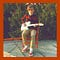

The next live music concert of bots
Example of a bot playing guitar

This world is filled with creative people who unlike me don't only suffice themselves of creativity but make a huge effort for turning this creativity into real products and services. When I was thinking about this automated guitar player I was not thinking that people like rafingz have already gone into this idea and turned them into this
But this is a prototype of what could be a very successful cultural tech product given the increasing number of people leveraging the power of MAO to produce sound and this audience of people playing and learning how to a guitar. The bot revolution that we are entering makes this kind of guitar bot player something that people will be eager to buy and play with if designed well. We could imagine it being programmable with a computer and it can become the guitar teacher of those like me who want to learn guitar.

Who knows maybe the next live concert of Rita Ora, .. will be with musician bots playing musical instruments here behind the artist
bots playing drums, bots playing piano, bots playing Saxo, and so on. Drip by drip we will be close to this new kind of live concert that will be entirely played and why not a bot as the lead vocal of this automated orchestra.
Startups like apple and SoundCloud have shaped the music industry but, like tech startups, they have been so quiet about bringing innovative tech-enabled solutions about music and musicians cannot focus both on playing music and coding bots even if both are in my point of view art. The music industry is not only about revenues and market share, but it is also mostly about emotion and people like us listen to sounds like this and like musical experiences like that. We tech entrepreneurs have been like apple and sound very quiet at shipping creative experience and technical solutions for what is a sector that produced +20 billion dollars of revenue in 2021.
If you are both interested in technology and music know that there are many opportunities for making music producing and consuming better with technology and I have been writing about some of these opportunities like search engines and the music industry, who listen to this music, brand in musical hit, this boomer and this art, Crowdsourcing hits and this is what this player is about. All these are ideas about technology and the music industry. You can read them all and work on them if you think that they are interesting enough.
Technology has this characteristic of implementing possibilities like how reading and writing have this characteristic of highlighting possibilities then compound reading, writing, and technology are three levers for producing an ever more interesting and efficient world. I hope that you will leverage them to produce this next great thing that will help me in my journey, these word that I am sharing with you in my medium’s blog is about telling that I believe that you can.
PS: Happy new year 2022